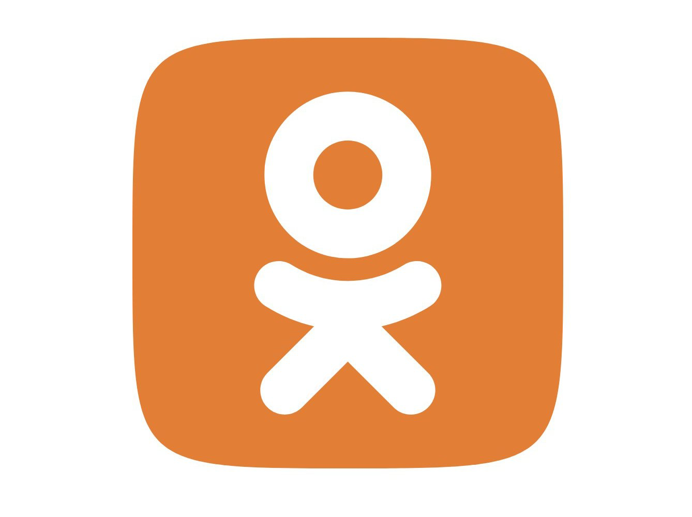
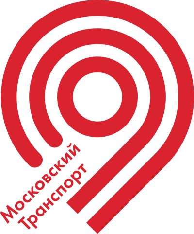
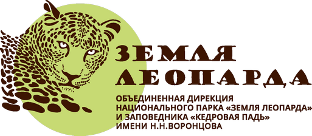
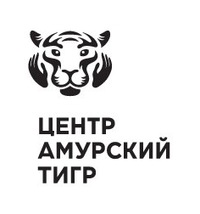
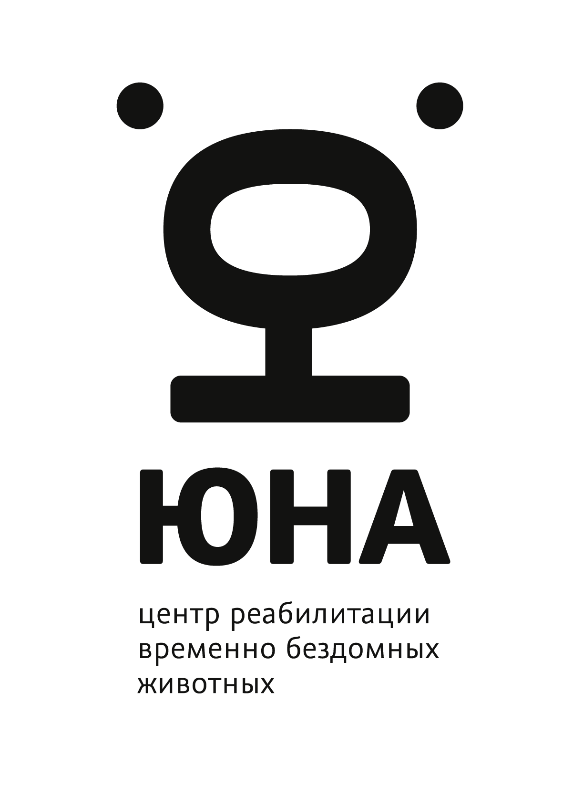
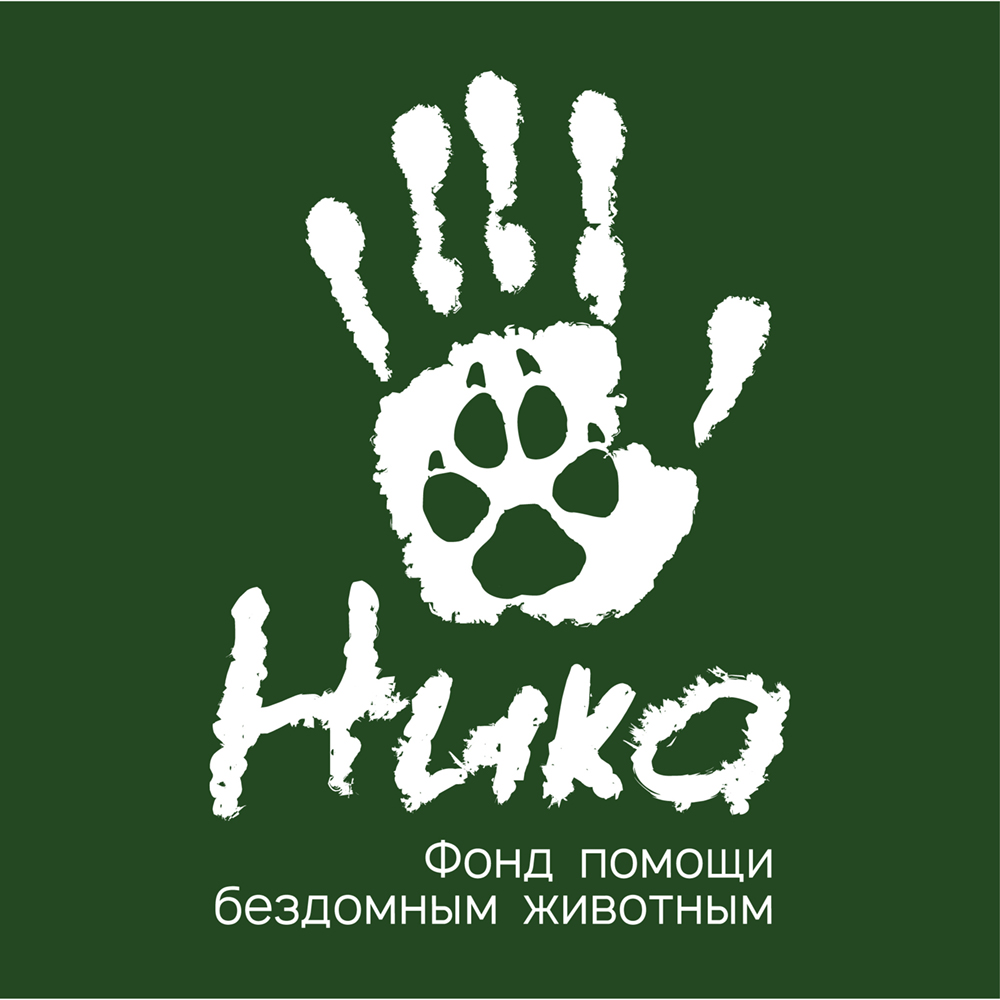
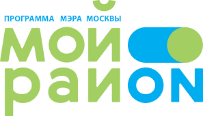
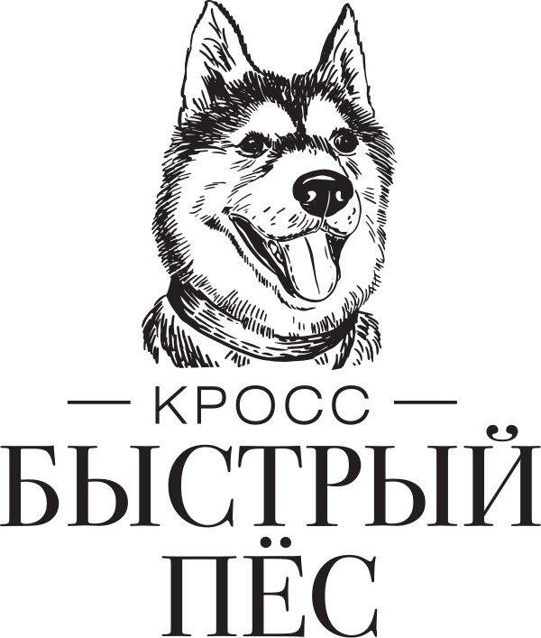

Новости
Лента ВКонтакте
Свежие публикации сообщества «КОТ» во ВКонтакте.
Видео
Наши сюжеты
Смотрите свежие сюжеты и большие спецпроекты «КОТ».
Спецпроекты
Наши партнёры
Нам доверяют
Мы сотрудничаем с крупнейшими зоозащитными организациями, приютами и ветеринарами.








О нас
Всё о животных
Всё о животных
и зоозащите
«КОТ» — это ведущее российское онлайн-СМИ, полностью посвящённое животным и зоозащите.
У нас можно найти и смешные видео с попугаями, и большие расследования о плохом обращении с животными, а ещё узнать, как правильно общаться с вашими питомцами. Мы сотрудничаем с крупнейшими зоозащитными организациями, приютами и ветеринарами.
Подписывайтесь на нас
Мы есть во всех соцсетях и мессенджерах — выбирайте удобную площадку.